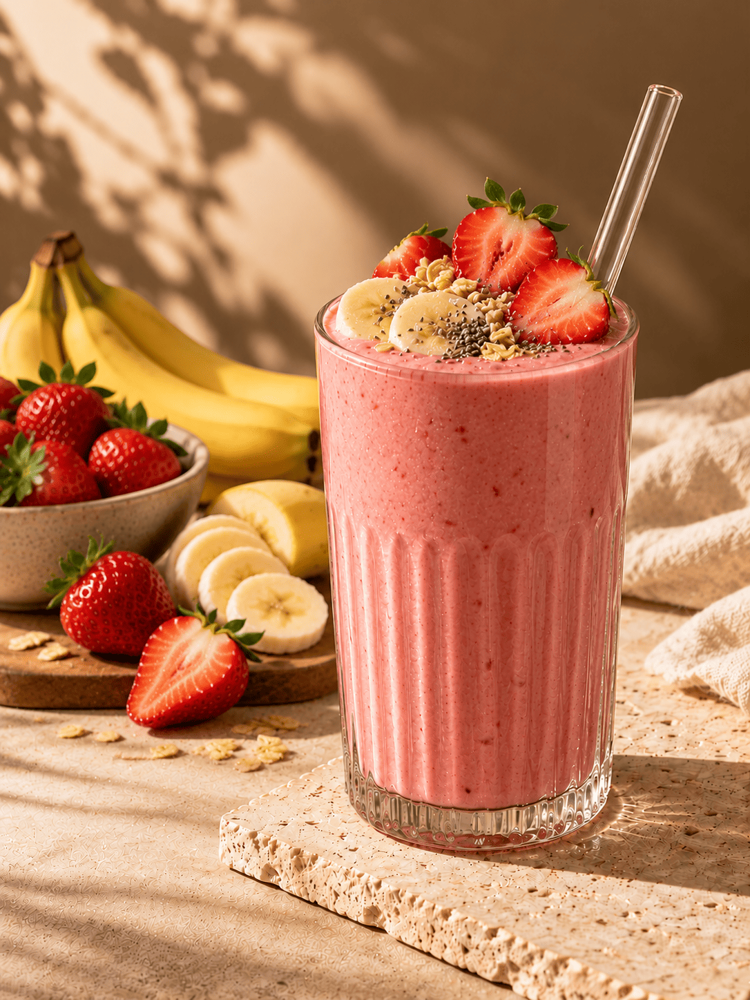

Smoothies
Smoothie Fraise Banane
Un classique doux et fruité, prêt en 5 minutes. Parfait au petit déjeuner ou au goûter, avec du yaourt, du miel et des glaçons.
2 verres · 5 min · Facile Voir la recette →